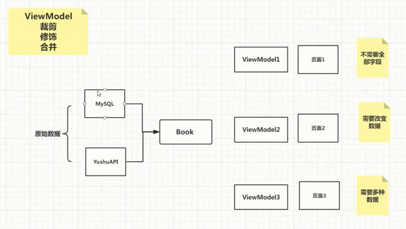
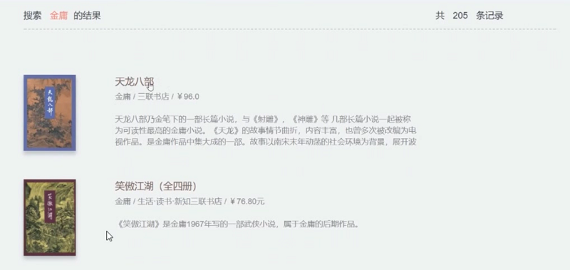
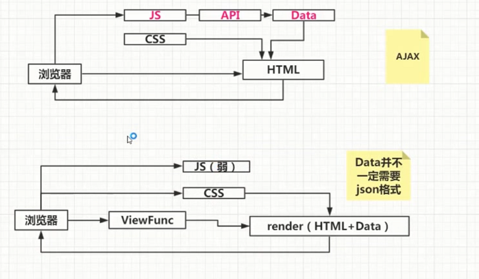

Flask 学习笔记|06 书籍详情页面的构建
本章我们提出一个概念ViewModel，并详细解释ViewModel的意义。此外面向对象虽然是老生常谈，但你真的理解面向对象吗？我们将在本章中通过重构来一步步揭示到底什么才是对象，如何写出面向对象的代码来。思维的训练，永远比业务要重要
6.1 ViewModel的基本概念

大多时候，我们从数据库，或者外部网络获取到的原始数据，并不能满足复杂的业务需求。业务的直观体现就是页面。
- 可能有的页面不需要全部的字段
- 可能有的页面需要改变一些数据，如给书名加上《》
- 可能有的页面需要多种源数据组合到一起。
为了满足各种各样复杂的业务需求，我们抽离出一个ViewModel层，为每一个页面定制一个专属ViewModel来适配。综上所述，ViewModel有三个方面的作用
- 裁剪
- 修饰
- 合并
这三个作用并不一定在每个ViewModel上只出现一次，可能会组合使用。
6.2 使用ViewModel处理书籍数据
 通过书籍搜索页面的观察，我们可以分析出，这个页面需要返回的有三部分数据 1.书籍详情信息 2.搜素关键词 3.总记录数
而我们现在的原始数据里
- 数据详情数据载ISBN搜索和关键词搜索返回的数据格式不统一
- 原始数据里并没有搜索关键词，需要手动添加
- ISBN搜索只返回0或1条数据，需要手动计算出总记录数
这些都可以在ViewModel层做统一处理。
view_models/book.py
小建议：
- 在python中，并不建议，为不同包下的文件起不同的后缀名，如book_web.py,book_model.py
- 数据处理，如果是前后端分离的项目，建议在客户端有js去操作，如果是模板渲染HTML，建议在服务器端去操作
- 一种编程思想：在处理多个数据的时候，可以先封装出处理单个数据的方法，然后再循环调用这个方法，来处理多个数据。
class BookViewModel:
@classmethod
def package_single(cls, data, keyword):
returned = {
'book': [],
'keyword': keyword,
'total': 0
}
if data:
returned['total'] = 1
returned['book'] = [BookViewModel.__cut_book_data(data)]
return returned
@classmethod
def package_collection(cls, data, keyword):
returned = {
'book': [],
'keyword': keyword,
'total': 0
}
if data:
returned['total'] = data['total'],
returned['book'] = [BookViewModel.__cut_book_data(book) for book in data["books"]]
return returned
@classmethod
def __cut_book_data(cls, data):
book = {
'title': data['title'],
'publisher': data['publisher'],
'pages': data['pages'] or '',
'author': '、'.join(data['author']),
'price': data['price'],
'summary': data['summary'] or '',
'image': data['image']
}
return book
6.3 伪面向对象：披着面向对象外衣的面向过程
仔细分析我们的BookViewModel，YuShuBook两个类。可以发现，实际上这两个类的编写根本就不是遵循面向对象设计方法。
面向对象设计方法要求一个类或对象，应该可以描述特征和行为。描述特征的即类变量，实例变量；描述行为的就是方法。
但是我们的BookViewModel只有方法，没有特征。虽然我们给他们包上了```class:``这层华丽的外衣，但是他的本质依旧是面向过程的（以函数为核心）。大部分新手会写出这样的代码，是因为，面向过程是我们人类思考的一个惯性。
**如何判断一个类是否遵循了面向对象原则？##
看是否有大部分方法可以被编辑为类方法或者静态方法
6.4 重构鱼书核心对象
1.重构思路：
首先来看YuShuBook。之所以YuShuBook会出现大量的classmathod，他的原因就在于：YuShuBook并不会保存数据，而是把所有数据都返回给了调用方去；换句话说YuShuBook是个伪面向对象（伪类），因为他只是包装了一系列的方法，而没有存储这个类的特征，数据。
既然一个类或者对象应该有自己的特征和数据，那么我们就没有必要通过方法的形式把本应该用来描述这个列的特征的数据返回回去，而是保存在YuShuBook这个类中。
YuShuBook关键词缀在Book中，依此可以知道，我们这个类是用来描述书籍的，而search_by_isbn，search_by_key这些方法返回的就是关于书籍的数据，所以我们完全可以用这个方法所返回的数据来描述类本身，把他存储到类的内部，而不是返回到外部去（保持类的内聚性）
2.重构后的代码
class YuShuBook:
search_by_isbn_url = "http://t.yushu.im/v2/book/isbn/{}"
search_by_key_url = "http://t.yushu.im/v2/book/search?q={}&count={}&start={}"
def __init__(self):
self.total = 0
self.books = []
def search_by_isbn(self, isbn):
url = self.search_by_isbn_url.format(isbn)
result = HTTP.get(url)
self.__fill_single(result)
def search_by_key(self, q, page=1):
url = self.search_by_key_url.format(q, current_app.config["PRE_PAGE"],
self.calculate_start(page))
result = HTTP.get(url)
self.__fill_collection(result)
def __fill_single(self, data):
if data:
self.books = [data]
self.total = 1
def __fill_collection(self, data):
self.books = data['books']
self.total = data['total']
def calculate_start(self, page):
return (page-1) * current_app.config["PRE_PAGE"]
# 具体的单一数据处理封装在BookViewModel里
class BookViewModel:
def __init__(self, book):
self.title = book['title'],
self.publisher = book['publisher'],
self.pages = book['pages'],
self.author = book['author'],
self.price = book['price'],
self.summary = book['summary'],
self.image = book['image']
# BookCollection只负责集合的处理
class BookCollection:
def __init__(self):
self.keyword = ''
self.total = 0
self.books = []
def fill(self, yushu_book, keyword):
self.keyword = keyword
self.total = yushu_book.total
self.books = [BookViewModel(book) for book in yushu_book.books]
在重构的时候，我们没有在类中保存查询参数，如果保存了查询参数，在代码层面是没有问题的，但是存在一个问题就是：YuShuBook的作用是隐藏了数据的具体获取方式，也就是说YuShuBook足够的抽象，他不需要我们去关心数据具体是怎么来的，但是如果我们把查询参数也加入到类里面来之后，他就会使得这个类更加的具体化，因为我们保持的数据更多，更加精准，甚至描述了使如何获取数据的，一般一个类太具体化就会存在一个扩展和修改的问题，加入YuShuBook有一天内部的数据来源改成从数据库里获取信息，那么这样的情况下面，我们把查询参数放在YuShuBook中反而不好了，他减少了YuShuBook的灵活性
6.5 从json序列化看代码解释权反转
重构完上节课的代码后，如果访问视图函数，是会报json转换异常的错误的，这是因为python不能直接将一个对象序列化成json字符串。下面我们来解决这个问题
虽然对象不能序列化，但是字典是可以的，而python有一个实例变量__dict__来获取一个对象所有属性组成的字典。
但是对于BookCollection这个类实例化的对象来说，不可以，因为他不是一个普通的python对象，他有一个属性是BookViewModel对象（books）。
转移解释权
我们可以借助一种转移解释权的思想，我们提供一个函数，来序列化对象，当有遇到不可序列化的成员变量时，当我们不知道如何继续序列化的时候，我们可以把这个解释的过程交给函数的调用方，由函数调用方帮我们完成序列化的过程。
这种转移解释权的思想可以通过函数式编程的方式非常简单巧妙的实现：
我们在编写json.dumps()的时候，要求函数调用方传递一个函数，传递的这个函数的具体实现细节是由函数调用方来完成的，我们不需要关心，这个函数内部的具体实现细节，一旦遇到不能够序列化的类型的时候，我们就调用这个函数。将不可序列化的类型转化成可以序列化的类型。我们只需要关注return的结果。
这就实现了代码解释权的反转，代码的解释权不在由函数编写方来定义，而是把这个权利交给了函数调用方。也是23种设计模式中的策略模式
@web.route("/book/search/")
def search():
"""
搜索书籍路由
"""
form = SearchForm(request.args)
if not form.validate():
return jsonify(form.errors)
q = form.q.data.strip()
isbn_or_key = is_isbn_or_key(q)
books = BookCollection()
yushu_book = YuShuBook()
if isbn_or_key == 'isbn':
yushu_book.search_by_isbn(q)
else:
page = form.page.data
yushu_book.search_by_key(q, page)
books.fill(yushu_book, q)
return json.dumps(books, default=lambda o: o.__dict__)
6.6 详解单页面与网站的区别

- 对于普通网站，数据的渲染是在服务器端完成的，数据的运算（业务逻辑）主要是在服务器，视图函数中来完成的
- 对于单页面来说，数据的渲染是在客户端来完成的，数据的运算（业务逻辑）主要是在js中操作的
- 原文作者：Binean
- 原文链接：https://bzhou830.github.io/posts/20160506flask06/
- 版权声明：本作品采用知识共享署名-非商业性使用-禁止演绎 4.0 国际许可协议进行许可，非商业转载请注明出处（作者，原文链接），商业转载请联系作者获得授权。